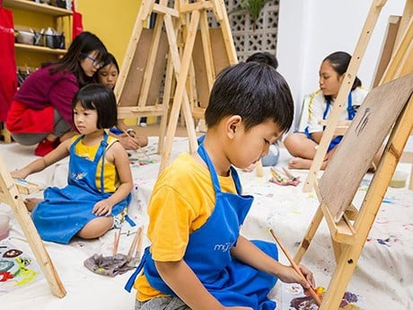

Bao bọc ít hơn
Thường cha mẹ hay có thói quen bảo vệ, bao bọc con trẻ một cách quá mức mà không cho chúng khoảng không gian để tận hưởng cuộc sống. Khi bao bọc trẻ một cách quá mức như vậy sẽ khiến trẻ giảm tự tin và lấy đi cơ hội tự lập của con. Dần trẻ sẽ trở nên phụ thuộc, ỷ lại vào bố mẹ mà không có khả năng tự lập. Vì thế đa phần khi lớn lên sẽ giảm đi đáng kể sự phát triển và thành công của trẻ.
Thay vì bao bọc trẻ, cha mẹ nên để chúng thoải mái và có trách nhiệm với công việc của mình, hãy quan sát và hỗ trợ trẻ nếu việc đó ngoài tầm với của trẻ. Ngoài ra nên cho con trẻ tiếp xúc nhiều với thế với bên ngoài để chúng tiếp thu thêm nhiều kiến thức bổ ích hơn về cuộc sống.
Cho con dùng ít đồ công nghệ hơn
Với thời buổi công nghệ phát triển như ngày nay, đa số bậc phụ huynh trông hoặc tìm thú vui cho trẻ bằng cách cho sử dụng điện thoại, ipad, xem Tivi,...Khi tiếp quá nhiều với những món đồ công nghệ này trẻ sẽ phụ thuộc vào chúng mà mất dần đi tính sáng tạo, sự hào hứng khám phá thế giới. Ngoài ra tính trạng đáng nói hiện nay, đa số trẻ có vấn đề về thị lực khi tiếp xúc quá nhiều với đồ dùng công nghệ.
Theo trung tâm ngoại ngữ tại Quy Nhơn, cha mẹ nên hãy khuyến khích con chơi thể thao, đọc sách, vẽ tranh,...để cắt giảm tối đa việc sử dụng các món đồ công nghệ của trẻ.
.jfif)
Không bắt ép con tham gia quá nhiều hoạt động
Nhiều cha mẹ cứ nghĩ rằng con trẻ tham gia các hoạt động càng nhiều càng giúp trẻ phát triển tốt và có nhiều kiến thức hơn. Tuy nhiên cách nghĩ đó hoàn toàn sai lầm. Không nên sắp xếp thời gian hoạt động của trẻ quá dày đặc, bởi trẻ không phải là Robot cần thời gian vui chơi và nghỉ ngơi.
Bố mẹ cần nhớ thể chất mới là điều quan trọng nhất ở trẻ, không nên bắt ép trẻ quá mức. Hãy dành thời gian vào các hoạt động vui chơi và khám phá môi trường xung quanh nhiều hơn. từ đó chúng sẽ có thêm rất nhiều kiến thức và phát triển tiềm năng 1 cách toàn diện nhất.
Ít can thiệp và để con tự giải quyết vấn đề
Bất kỳ khi nào con gặp vấn đề tranh cãi với bạn bè, anh chị em trong nhà, cha mẹ thường hay làm trọng tài đứng ra can ngăn lại. Điều này về lâu dài sẽ hạn chế khả năng tự giải quyết vấn đề của trẻ, làm ảnh hưởng đến sự phát triển và thành công sau này.
Theo trung tâm ngoại ngữ tại Quy Nhơn, trong những trường hợp này hãy để trẻ tự giải quyết vấn đề của mình, nếu cần hãy góp ý để trẻ tự giải quyết chứ không nên can thiệp quá sâu.
Mua ít đồ chơi lại
Thường các bậc phụ huynh rất hay chiều chuộng con bằng cách, mua quá nhiều đồ chơi cho trẻ, trẻ thích gì đều mua cho chúng. Việc trẻ sở hữu quá nhiều đồ chơi sẽ làm ảnh hưởng đến mức độ hạnh phúc trong trẻ, nếu ít đồ chơi lại trẻ sẽ lọc ra được những thứ không cần thiết và tập trung cho những thứ quan trọng hơn.
Theo một số nghiên cứu cho thấy, những chuyến đi chơi cùng gia đình sẽ khiến trẻ hạnh phúc hơn những thứ đồ chơi vật chất nhiều. Vì thế hãy hạn chế mua đồ chơi cho trẻ lại, thay vào đó dẫn chúng tham gia các hoạt động ngoại khóa giúp trẻ thoải mái vui chơi và khám phá môi trường để tích lũy nhiều kiến thức hơn.
